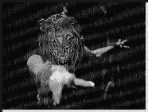
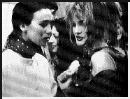
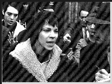
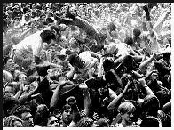

Contents | Features | Reviews | News | Archives | Store

Contents | Features | Reviews | News | Archives | Store
 |
22nd Seattle
International |
Another special feature of SIFF is the annual poster auction, which was held this past Sunday. Festival Director MacDonald and company bring back selections, many of them rarities, from their many travels throughout the year and offer them up at this benefit event for SIFF. Auctioneer Ken Tucker kept the action lively, offering unique incentives for additional bids (one of which was a '60s self-help guide entitled Why Do I Feel I am Nothing Without a Man? to the highest bidder for a poster from The Incredibly True Adventures of Two Girls in Love).
Moreover, Tucker was able to keep the house reasonably full over the two-hour-plus time span - no small feat, since the auction was competing with the final game of the Seattle Supersonics against the Utah Jazz, with the victor playing the Chicago Bulls for the NBA. Or perhaps it was the copious amounts of Frexeinet and cake that ensured attendance. Final prices had a fairly wide range, from a modest $2.50 for a poster from Vicente Aranda's latest melodrama, Turkish Passion. It didn't help that the unfurling of the poster was accompanied by a surfeit of boos and hisses; apparently the film played the night before to universal condemnation.
The greatest surprise of the auction was a price of $310 for a original French poster from Betty Blue - neither the poster nor the film was worth more than two cents, in my opinion, since I loathe filmmakers who attempt to sell psychosis wrapped up in exploitation as a form of personal transcendence. A rare poster from Truffaut's 1961 classic, Jules et Jim, also sold for $310. The highest price of the afternoon came from frantic bidding for a one-of-a-kind sheet from Alex Cox's Sid and Nancy. It finally went to someone who had submitted a pre-auction bid of $515. Speaking of Cox, his newest film, Lust and Revenge, is a last-minute addition to the festival schedule, and I will cover it in my next report.
On this theme of lust, revenge and things Latin, Francesca Fisher and Tag Siegel's new film Shadow of the Pepper Tree is entertainingly overblown melodrama lifted to a new high. Set in the late 1960s, it is the story of a Mexican woman who seeks retribution after being deserted by an American man. Unlike other women in her situation, however, she has an additional advantage: she is a shaman, from a long line of distaff shamen, and the powers she unleashes against him are quite impressive. The film's tempo flowed quite smoothly to its obvious conclusion. Many of us in the audience were surprised by the speed with which the film did so, since this version was fifteen minutes shorter than advertised.
Only after the screening was it disclosed that the second reel (involving the couple's relationship before its demise) had not only not been screened, but hadn't even arrived. Co-director Fisher tried to put a brave face on the situation: "You missed a lot of foreplay," she gamely joked.
Fina Torres' Celestial Clockwork tells the tale of a Venezuelan bride, who flees to Paris on her wedding day, and attempts to parlay her remarkable voice into an operating career despite the machinations of a jealous rival. The film is amusing enough, with lots of computer-generated manipulations of color and background to give it charm, but it plays like a less-esoteric version of Vera Chytilova's mid-'60s Czech film classic, Daisies; hence, it amounts to less than the proverbial sum of its parts.
The debut film from Adrienne Shelley (a mainstay of Hal Hartley films), Sudden Manhattan, is supposed to represent the life of a young Holly-Golightly for the '90s, meaning that she has the youth and beauty, but is self-possessed to the point of psychosis. The film follows her activities through day after aimless day as she wonders whether or not she really sees serial murder being committed on the same street every day. Among the film's highlights is her wonderment over the fact that a pimple on a man's face could disappear in twenty-four hours, and the film picks up speed from there - unfortunately, the trajectory it takes is entirely in a downward direction.
More personal unpleasantness is embodied in the person of one Valerie Solanas in Mary Harron's scintillating debut, I Shot Andy Warhol. As the title makes evident, Solanas is best known for her role as a would-be assassin and revolutionary (she was the founder - and probably sole member - of the group known as SCUM - the Society for Cutting Up Men). Solanas claimed that she shot Warhol in June of 1968 because he "had too much control over my life".
In the course of the film, it becomes clear that she shot Warhol because she had too little control over his life - and her own. An individual of extreme anger and delusions about her abilities, Solanas was attracted to Warhol because he has the power to promote her "talent" and he to her (at least initially) because he mistook her excessive displays of attitude for talent. When she became overbearing in her demands for recognition and promotion, Warhol alternated between attempts at placation and avoidance, a strategy in keeping with his methodology of using passive-aggressive manipulation to control those around him. However, in the case of the emotionally and mentally volatile Solanas, this was a strategy with deadly consequences for Warhol and his career (after the assassination attempt, Warhol's artistic output ceased and his health became permanently impaired - he died in 1987 from complications following routine surgery).
Although Solanas died, homeless and suffering from pneumonia, in 1989, or perhaps because she did so, she is now perceived to be a feminist martyr, and her 'SCUM Manifesto' is now considered, inexplicably, to be a feminist classic. The Manifesto is nothing more than a collection of pseudo-scientific assumptions mixed with blatant misandry. Among Solanas' most infamous 'observations' is her conclusion that men have to be genetically inferior because their 'Y' chromosome is an imperfect form of an 'X' chromosome; imagine the outrage that would rightfully ensue if men were to assume that women were inferior because their chromosomal structure had no variance.
Her so-called radical ideas were warmed-over leftovers from the eugenics movement of a century before, and the patina of liberationist rage that she added to them doesn't disguise their moldiness, their illegitimacy, or their potential for evil. Under the circumstances, Ms. Solanas was nothing more than yet another crackpot from the 1960s who didn't deserve her allotment of fifteen minutes in the public spotlight. That having been said, Lili Taylor deserves much more than that for her masterful portrayal of Solanas, and one cannot overlook the overwhelming displays of talent by Jared Harris (as an extremely eerie evocation of Warhol), and especially of Stephen Dorff (as Candy Darling).
Tourists are encouraged to come to Texas with the slogan that the state "is like a whole other country". Two films addressed that theme at SIFF, and the results were mixed. At the top of the hill is John Sayles newest film, Lone Star, the story of a sheriff (played by Sayles regular Chris Cooper) who is part of a law-enforcement dynasty. One day he is called out to the local army base to pick up some human remains discovered there, and uncovers much more than he cares to know, including a rather obscure fact that threatens his future happiness.
Although the murder mystery is the primary plot motivation, the really fascinating aspect of Lone Star comes from its masterful interweaving of the social and racial history of Texas (watch for a brief, but hilarious sequence on teaching political correctness in the classroom - the results are unexpected). Sayles' film has a running time of over two hours, but it has the feel of a welcome and overdue visit from a long-absent friend. Far more formulaic, and less endearing, is Lisa Gottlieb's Cadillac Ranch, a tale of three sisters on the lam from a corrupt sheriff (we won't touch this one with a ten-foot pole - too easy) who are also attempting to uncover a secret that threatens to tear their family apart, but their secret is only nominally interesting and too soon revealed. The fine performances of Suzy Amis as the ne'er-do-well sister and Christopher Lloyd as the villain are thus put to no good end.
In 1992, Spin magazine declared that Seattle was to modern music as Bethlehem was to Jesus Christ. No doubt, this declaration fits under the category of fatuously-inspired sacrilege, but, as director Doug Pray indicates in the documentary, Hype!, it is a reminder of how hysterical the buzz around the Seattle music scene had become, thanks to the acclaim surrounding Northwest bands like Nirvana and Pearl Jam. To Pray's credit, his documentary gives a more fascinating account of the development of grunge music, detailing its rise from late-'70s punk as filtered through the sensibilities of a city that had to create its own distinct sound because outside bands stopped coming to Seattle, seeing it as nothing more than a musical pariah. So, the local bands played the local club circuit as if they were playing to an audience of their friends, a fact which was, more often than not, the truth in the early days.
Hype! has the obligatory emphasis upon the 'big names' (there is a rare video clip of the first public performance of Smells Like Teen Spirit) and deals briefly with Kurt Cobain's self-destruction in 1994. Even the normally reclusive Eddie Vedder shows up to provide detailed commentary. But Hype! is out to create a picture that is as broad in coverage as it is deep in detail, and so the film's primary emphasis is upon the obscure and those whose fame has not yet expanded beyond local range. Watching Hype! is like reading a very good (and, as yet, unwritten) book on the subject; you leave the theatre knowing everything necessary about the subject, and the experience was never less than you expected.
Next Week: The final highlights from SIFF, including Todd Solondz' winner from Sundance, Welcome to the Dollhouse, and two films straight from Cannes: Robert Altman's Kansas City and Alex Cox's Lust and Revenge. Also: initial American reactions to Danny Boyle's Trainspotting and the winners of the Golden Space Needle awards.
Contents | Features | Reviews | News | Archives | Store
Copyright © 1999 by Nitrate Productions, Inc. All Rights Reserved.